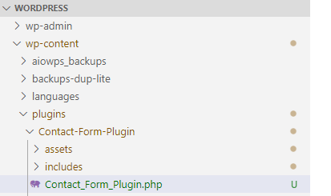
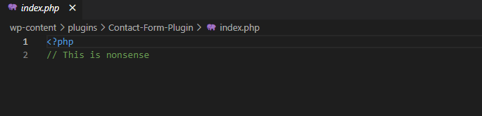
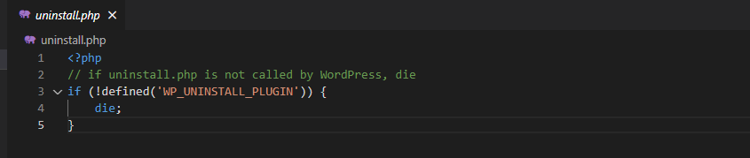
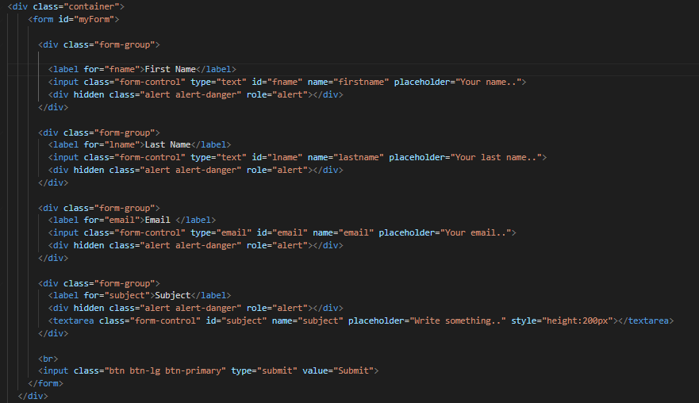
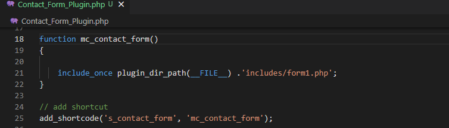
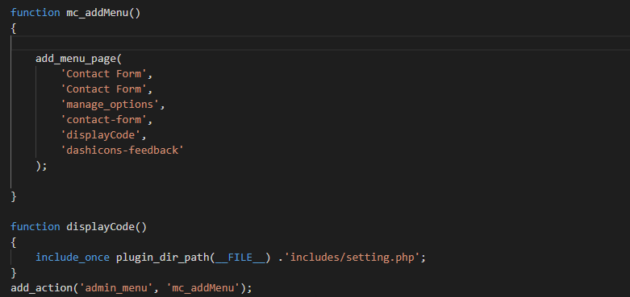
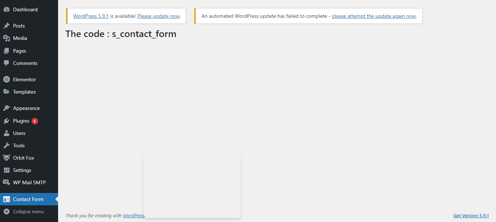
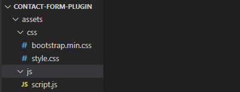
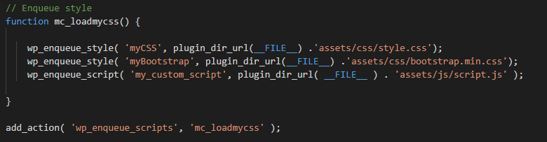

Plugin Development Step By Step (Version I)
Step #1: Creating The Folder and Files
Start by creating a folder in your wp-content/plugins directory. Inside that, create a PHP file for your plugin.
Give them both a name that makes sense and includes a prefix. I’m calling my folder Contact_Form_Plugin and my file Contact_Form_Plugin.php.
Header Requirements
Next what we need to do is open our Contact_Form_Plugin.php file and add some meta data. It contains informations like Plugin name, plugin URL, discription, version, Author, Author URI etc... At a minimum, a header comment must contain the Plugin Name.

Description
- Plugin Name: (required) The name of your plugin, which will be displayed in the Plugins list in the WordPress Admin.
- Plugin URI: The home page of the plugin, which should be a unique URL, preferably on your own website. This must be unique to your plugin. You cannot use a WordPress.org URL here.
- Description: A short description of the plugin, as displayed in the Plugins section in the WordPress Admin. Keep this description to fewer than 140 characters.
- Version: The current version number of the plugin, such as 1.0 or 1.0.3.
- Author: The name of the plugin author. Multiple authors may be listed using commas.
- Author URI: The author’s website or profile on another website, such as WordPress.org.
- Requires at least: The lowest WordPress version that the plugin will work on.
- Requires PHP: The minimum required PHP version.
- License: The short name (slug) of the plugin’s license (e.g. GPLv2)
- License URI: A link to the full text of the license (e.g. https://www.gnu.org/licenses/gpl-2.0.html).
- Text Domain: The gettext text domain of the plugin. More information can be found in the Text Domain section of the How to Internationalize your Plugin page.
Now, if you save your file and go to the Plugins screen in your development site, you’ll see the plugin on the screen:

We can activate it if we want, but it won’t do anything yet because we haven’t added any code to it.
Step #2: Secure our file
By validating, sanitizing, and escaping all data that goes in and out of our application, we are protecting our users from one of the most common attack methods.
Validating – is checking the data submitted before doing anything, such as storing it in the database.
Sanitizing – data is processing the submitted information and making sure it does not contain anything we do not want to store, such as removing any unwanted characters.
Escaping – is preventing any malicious code from actually executing in your browser.
index.php
In order to have a little bit of security in our plugin we need to create a standard index.php. This file helps if someone tries to access directly our plugin folder it will not go into all the available files that we have but it will be redirected to the index file. By default as a browser interacts it is the first file that it loads when we access a specific URL.
Step #3: Uninstall Methods
Your plugin may need to do some clean-up when it is uninstalled from a site.A plugin is considered uninstalled if a user has deactivated the plugin, and then clicks the delete link within the WordPress Admin.
So, we have two methods to uninstall:
Method 1: register_uninstall_hook #
To set up an uninstall hook, use the register_uninstall_hook() function: register_uninstall_hook(__FILE__, 'pluginprefix_function_to_run');
Method 2: uninstall.php #
To use this method we need to create an uninstall.php file inside the root folder of our plugin. This magic file is run automatically when the users deletes the plugin.
Always check for the constant WP_UNINSTALL_PLUGIN in uninstall.php before doing anything. This protects against direct access. The constant will be defined by WordPress during the uninstall.php invocation. The constant is NOT defined when uninstall is performed by register_uninstall_hook().
Step #4: Global Absolute Path
After we create our Contact_Form_Plugin.php. file the first thing we have to do is create an if statement condition.

ABSPATH is the global absolute path that is the constant variable defined by Wordpress.So, if this variable is not defined we are telling our plugin to die. Sometimes instead of 'die' we can use 'exit;'. When we initialize our wordpress website when all things in the backgroud are happening this constant variable is defined by WordPress and this constant valid variable carries itself throughout our entire WordPress installation if is only the software itself is the CMS,PHP code or other scripting language that are accessing our PHP file if something external from our website is accessing those files these ABSPATH constant varibale is not defined so if this is not defined kill the execution of this plugin because if this is not defined someone is accessing the file without the permission granted by WordPress. We dont want to trigger any functionality of the plugin because all the plugin interact directly with database and exposing database vulnerabilities.
Step #5: Using include Files
Another option as you develop your plugin is to create extra PHP files, known as include files. If you have a lot of these, you might create multiple folders for different types of include file, or you might just create one folder called includes.
We will create a folder called includes. After that we will create two php files, form1.php and setting.php

Now what these files will do is to overwrite the default header and footer layouts provided by default when you call either the get_header() or get_footer() functions. In fact, if we refresh our website, it looks like the header and footer are gone. This is because we have not added any markup to those files yet. Just for grins, setup the files like so to test this out.
form1.php
This is the file that contain the contact form that we created basically it is an html code and bootstrap :
Setting.php
This is the file that contain the short code that is going to be displayed:

Step #6: Adding Function
Now it’s time to write some function in our Contact_Form_Plugin.php
The add_shortcode()function is used whenever we call our shortcode it will display the contact form that we had created.
We use the add_action() function to hook our code to an action hook, with two parameters: the name of the action hook and the name of our function. Now try saving your files and going back to your site. You’ll see that the contact form has been added to your admin menu (assuming you’ve activated the plugin).
Step #7: Enqueue Stylesheets and Scripts
If you need to use custom styling or scripts in your plugin, you could add them right into your plugin file—but that’s not best practice. Instead, you should create stylesheets and scripts as separate files in your plugin folder and enqueue those, using a function provided by WordPress.
We then need to enqueue that file in our plugin so that it can be used by WordPress. Add this to our main plugin file, above or below the functions we already have.
The Full Source Code(Check Version I ) : Custom WordPress Plugin